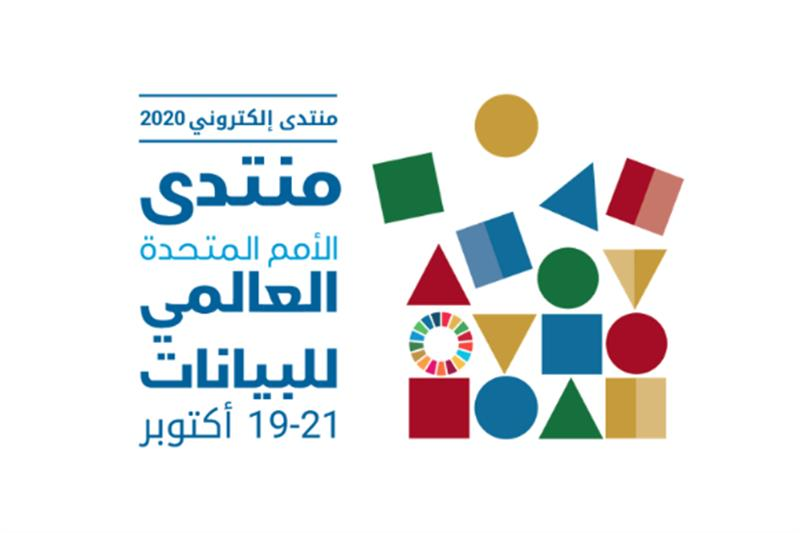
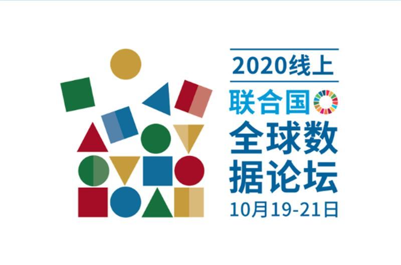
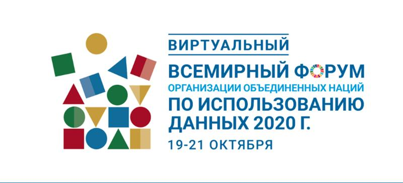
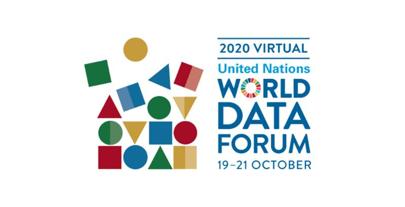

PEACE & HUMANITARIAN|#Data protection|NEWS
Published on 20 October 2020, 05:00. Updated on 20 October 2020, 09:26.
Doing good with data
by Ben Parker
Geneva Solutions
How to harness data to improve the lives of the elderly, produce more detailed maps, and more accurately predict disease outbreaks are a few of the ideas to be discussed at a data-for-development conference this week, a gathering involving Geneva-based organisations and the Swiss government.
The pandemic looms large at the virtual UN World Data Forum, which started yesterday and is expected to bring together some 5,000 people from governments, the private sector, civil society, and the development community.
The gathering will examine the 'precarious balance between the potential risks and intended benefits of data in humanitarian settings', such as the prospect of Covid-19 tracking technology on the smartphones of billions in rich and poor countries.
As the world moves closer to the 2030 deadline for the collective sustainable development goals, data - in myriad forms - could provide a boost to help reduce poverty, reach those in need, even quell conflict. As well as privacy and data protection, some recurring themes in discussions of data-for-good are how to ensure that the pursuit of bigger and better data doesn't exclude the most needy and vulnerable.
Digital public goods: Among the topics to be discussed this week is how vast amounts of mobile telecommunications and financial services data could be put to use in fueling data-for-good innovations and insights from artificial intelligence. One session will focus on how the private sector, researchers, and governments could share huge troves of data as “digital public goods”. The potential of “big data” for development planning and social progress is almost always accompanied by qualms about individual privacy, exclusion, and bias.
Responsible data: The responsible use of data for pandemic response will be reviewed in a public discussion today that will include the Geneva-based International Committee of the Red Cross, WHO, other UN agencies, and the Swiss government.
The conference is co-hosted by the Swiss government and the UN.




#United Nations #technology #data #Data protection
SOURCE: GENEVA SOLUTIONS
SOURCE: UN WORLD DATA FORUM